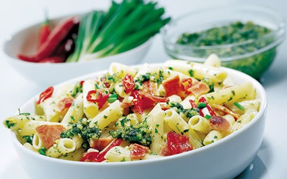

Bacon and Basil Pesto Pasta

Description
A delicious 5-ingredient pasta dish for lunch or dinner that is ready in 20 minutes.
This Bacon and Basil pesto pasta is perfect for a last minute dinner idea or a hearty lunch!
Ingredients
- 2 cups pasta(Penne)
- 200g streaky bacon
- 3/4 cherry tomatoes sliced in half
- 4 tablespoons basil pesto
- 1/2 cup creamy feta
-
Other:
- 2 1/2 cups water
- 1/2 tablespoon olive oil
- salt and freshly cracked black pepper
Instructions
- In a medium-sized pot, boil the pasta in 2 1/2 cups water, until al dente (cooked but not soggy!) and then drain and set aside.
- Whilst the pasta is cooking, fry the bacon until crispy and then chop into small bits and set aside.
- Now using the same pan as you cooked the bacon in, add 1/2 tablespoon olive oil and fry the tomatoes until soft and juicy.
Sprinkle with salt and pepper. - Now, assemble everything! Mix the pesto through the pasta, add the bacon bits, cherry tomatoes and top off with creamy feta. Tadaaa!
Nutriton Facts
| Amount Per Serving | |
|---|---|
| Calories | 533.7 |
| Total fat | 20.2g |
| Saturated fat | 6.3g |
| Polyunsaturated fat | 5.8g |
| Cholesterol | 27.9g |
| Sodium | 682.8mg |
| Potassium | 479.2mg |
| Total Carbohydrates | 62.0g |
| Dietary Fibre | 9.7g |
| Sugars | 3.8g |
| Protein | 27.6g |

Notes
- This recipe serves 2 people so increase the quantities to serve 4 or more.
For more recipes visit :
The recipe